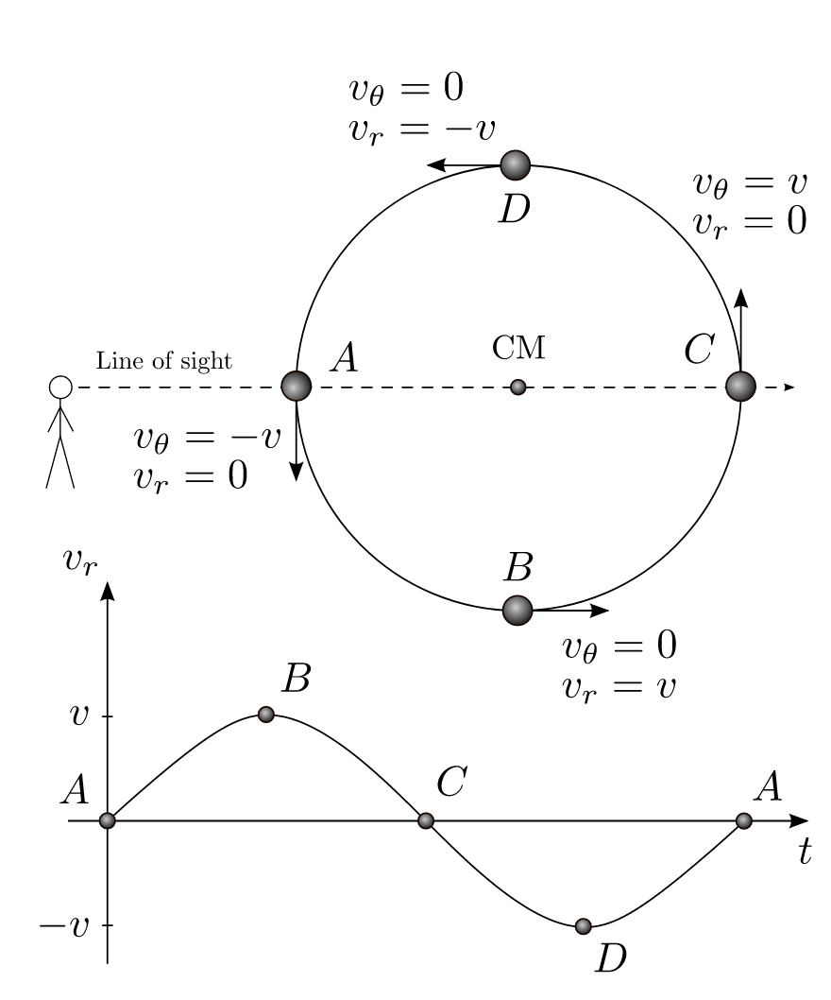

Forrige side🙂 🙁Radiell-hastighetsmetoden

$$P^2=\frac{4\pi^2a^3}{G(m_1+m_2)}$$ Er du enig i at hvis vi kjenner a og P, så kan vi beregne planetmassen? (husk: stjernemassen er kjent, se over) Kan du se hvordan vi kan finne P (altså planetens omløpsperiode om stjerna) fra observasjon av stjerna? Trykk her når du har funnet det ut, ikke før!
Stemmer, hvis du går tilbake til del 1B så vil du se at perioden P er felles for alle banebevegelsene, både objektenes bane omkring massesenteret og det ene objektets bane omkring det andre. Vi kan altså lese av perioden til stjernebanen fra Dopplereffekten! Da mangler vi bare a som, husker vi fra 1B, er store halvakse til ...
... stjernas bane om massesenteret ... planetens bane om massesenteret ... planetens bane om stjerna ... stjernas bane om planeten